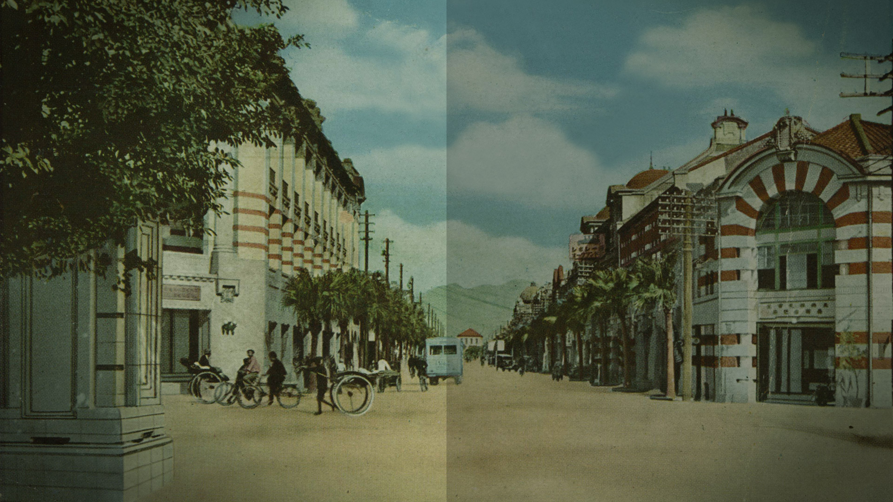
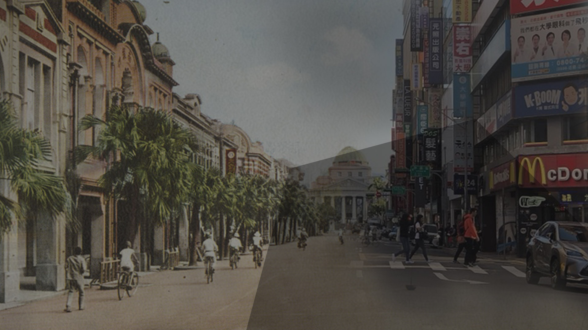
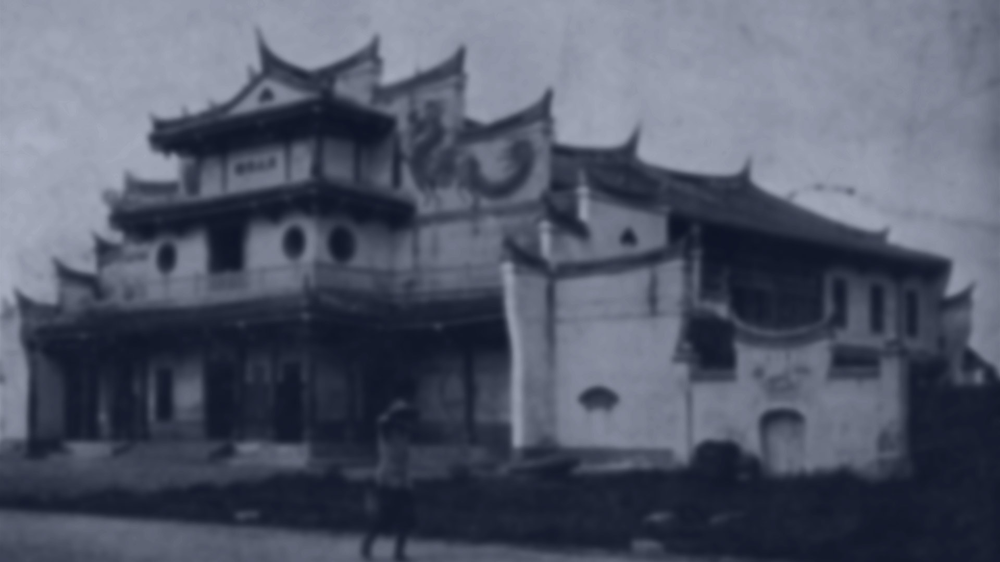
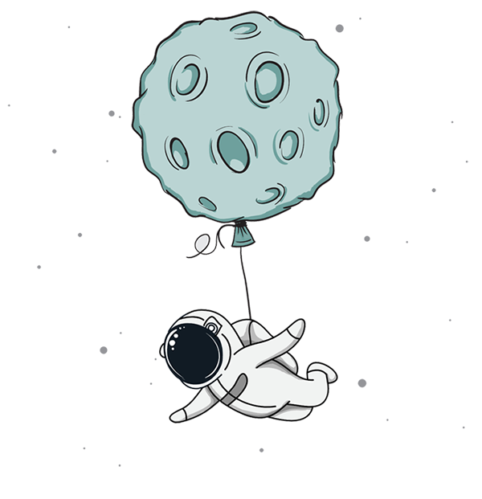

參與故事結果
故事風向圖
參與加速器結果
故事共創群
網站目的
專案回饋機制
市場數據
國民參與統計
好識共創
關於國民訂製
指導單位：
Copyright © 2018 Savvy Creation Ltd. All rights reserved. 好識共創有限公司版權所有 保留一切權利。
Top
國民訂製
故事起點
參與故事
參與加速器
對於這個故事，
你最想看到的情節是：
對於這個故事，你最想看到的情節是：
科
幻
發
展
歷
史
事
件
復
仇
轉
型
正
義
愛
情
科幻發展
歷史事件
復仇
轉型正義
愛情

你最喜歡故事中
的哪位人物？
日本皇族特使
(亦正亦邪的投機份子)
張肇治
(充滿想像力的科家)
高原理
(台版福爾摩斯角色)
許舒曼
(高原理時空相隔的戀人)
你最喜歡故事中的哪位人物？
日本皇族特使(亦正亦邪的投機份子)
張肇治(充滿想像力的科家)
高原理(台版福爾摩斯角色)
許舒曼(高原理時空相隔的戀人)

當一個過去的人來到現代，你最期待看到什麼？
當一個過去的人來到現代，你最期待看到什麼？
面對現代高科技的震撼或誤會趣味
「古早人」展現出「現代人」所沒有的獨特優點
因為時代更迭而產生的困境，例如難以伸張的正義
時空錯置下的愛情

如果你也可以回到1945年
你最希望見證那樣的場景？
如果你也可以回到1945年，你最希望見證那樣的場景？
風華絕代的鐵道飯店(毀於1945年台北大空襲)
貴客雲集的江山樓中的藝旦演出
由宇治知名茶鋪家族(三好家族)開設的辻利茶舖
台灣重要的戲劇表演場所淡水戲館看戲(毀於二戰轟炸)
蔣渭水曾三番兩次被訊問拘禁的臺北警察署
在劇中1940年代日治時期，你最期待出現台灣過去的哪一位名人？
在劇中1940年代日治時期，
你最期待出現台灣過去的哪一位名人？
楊日松
(年約18歲)
王永慶
(年近28歲)
鄧雨賢
(年約37歲)
陳澄波
(年約50歲)
其他
楊日松(年約18歲)
王永慶(年近28歲)
鄧雨賢(年約37歲)
陳澄波(年約50歲)
其他
您辦到了！
您的參與，為這個故事的發展帶來好的可能性
非常感謝您今天的搭乘！
您有 12 個朋友也參與了這個故事
故事訂製圖

參與加速器
故事訂製圖
參與加速器